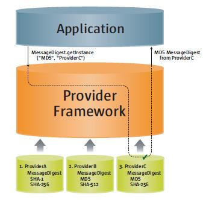
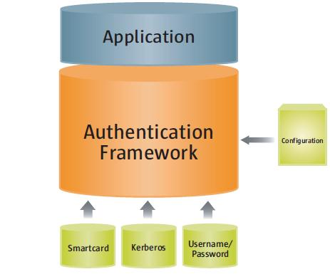

Java™ 플랫폼은, 시큐리티를 중시해 설계되었습니다. 그 중핵에서는, Java 언어 자체가 형태 보증되고 있어 자동 가베지 컬렉션을 제공해 어플리케이션 코드의 견뢰성을 강화하고 있습니다. 안전한 클래스 로드 및 검증 기구에 의해, 정당한 Java 코드만이 실행됩니다.
Java 플랫폼의 초기 버젼에서는, 퍼블릭 네트워크로부터 다운로드된 Java 애플릿 등, 잠재적으로 신뢰되지 않는 코드를 실행하기 위한 안전한 환경을 작성했습니다. 플랫폼이 발전해, 그 배치 범위가 확대하는 것에 따라, Java 시큐리티 아키텍쳐(architecture)는 증가하는 서비스 세트를 지원하기 위해서 진화했습니다. 현재, 아키텍쳐(architecture)에는, 어플리케이션 프로그래밍 인터페이스 (API), 툴, 및 일반적으로 사용되는 시큐리티 알고리즘, 기구, 프로토콜의 구현의, 대규모 세트가 포함되어 있습니다. 이것에 의해, 어플리케이션을 기술하기 위한 포괄적인 시큐리티 시스템를 개발자에게 제공해, 사용자 또는 관리자에게 어플리케이션을 안전하게 관리하기 위한 일련의 툴을 제공하고 있습니다.
Java 시큐리티 API 는, 광범위한 영역에 이릅니다. 암호화 및 공개키 인프라스트럭쳐(infrastructure) (PKI) 인터페이스는, 안전한 어플리케이션을 개발하기 위한 기반이 됩니다. 인증 및 액세스 제어를 실행하기 위한 인터페이스에 의해, 어플리케이션은, 보호된 자원에의 승인되어 있지 않은 액세스로부터 보호할 수 있습니다.
API 에서는, 알고리즘 및 그 외의 시큐리티 서비스에 대해, 복수의 상호 운용성이 있는 구현이 가능합니다. 서비스는 「프로바이더」에 구현됩니다. 프로바이더는, 어플리케이션이 시큐리티 서비스의 구현을 의식하지 않고 간단하게 취득할 수 있도록(듯이) 하는 표준 인터페이스에 의해, Java 플랫폼에 플러그 인 됩니다. 이것에 의해, 개발자는, 복잡한 시큐리티 기구를 실제로 구현하는 방법은 아니고, 시큐리티를 어플리케이션에 통합하는 방법으로 중점을 둘 수가 있습니다.
Java 플랫폼에는, 기본적인 시큐리티 서비스를 구현하는 다수의 프로바이더가 포함되어 있습니다. 추가의 커스텀 프로바이더를 인스톨 하는 일도 가능합니다. 이것에 의해, 개발자는 새로운 시큐리티 기구로 플랫폼을 확장할 수 있습니다.
이 문서에서는, 안전한 언어 기능으로부터 시큐리티 API, 툴, 및 편입 프로바이더 서비스에 이를 때까지, Java 플랫폼의 시큐리티의 개요에 대해 설명합니다. 해당하는 경우에는, 주요한 패키지 및 클래스에 도착해 설명합니다. 이 문서는, Java™ SE version 6 에 근거하고 있습니다.
Java 언어는, 형태 보증되도록(듯이) 설계되고 있어 간단하게 사용할 수 있습니다. 자동 메모리 관리, 가베지 컬렉션, 및 배열의 범위 체크를 갖추고 있습니다. 이것에 의해, 개발자의 전체적인 프로그래밍의 부하를 경감해, 발견되기 어려운 프로그래밍 에러의 감소 및 안전하고 견뢰한 코드를 실현합니다.
또, Java 언어는, 다른 액세스 수식자를 정의해 Java 클래스, 메소드, 및 필드에 할당할 수가 있기 (위해)때문에, 개발자는 클래스 구현에의 액세스를 필요에 따라서 제한할 수 있습니다. 특히, 이 언어는 다음의 4 개가 다른 액세스 레벨을 정의합니다. private,protected,public, 및, 지정되지 않는 경우는 package 입니다. 무엇보다 개방적인 액세스 지정자는 public 로, 액세스는 모든 사람에게 허가됩니다. 액세스를 가장 제한하는 수식자는 private 로, 액세스는 private 멤버 (메소드등)가 정의된 특정의 클래스 이외에서는 허가되지 않습니다. protected 수식자는, 임의의 서브 클래스, 또는 같은 패키지내외의 클래스에의 액세스를 허가합니다. package 레벨의 액세스는, 같은 패키지내의 클래스에의 액세스만을 허가합니다.
컴파일러는, Java 프로그램을 머신에 의존하지 않는 바이트 코드 표현으로 변환합니다. 정당한 바이트 코드만이 Java Runtime 로 실행되도록(듯이), 바이트코드검증자가 불려 갑니다. 이것은, 바이트 코드가 Java 언어 스펙에 준거하고 있어, Java 의 언어 규칙 또는 이름 공간 제한으로 위반하지 않은 것을 체크합니다. 검증자는, 메모리 관리 위반, 스택 언더 플로우(underflow) 또는 오버플로우, 및 부정한 형태 캐스트도 체크합니다. 바이트 코드가 검증되면(자), Java Runtime 는 그러한 실행을 준비합니다.
Java 플랫폼은, 암호화, 공개키 인프라스트럭쳐(infrastructure), 인증, 안전한 통신, 액세스 제어 등, 주요한 시큐리티 영역에 관한 API 세트를 정의합니다. 이러한 API 에 의해, 개발자는 어플리케이션 코드에 시큐리티를 간단하게 통합할 수 있습니다. 이것들은, 다음의 방침에 근거해 설계되었습니다.
어플리케이션으로 시큐리티를 구현할 필요는 없습니다. Java 플랫폼으로부터 시큐리티 서비스를 요구할 수 있습니다. 시큐리티 서비스는 프로바이더 (아래와 같이를 참조)에 구현되고 있습니다. 프로바이더는, 표준 인터페이스에 의해 Java 플랫폼에 플러그 인 됩니다. 어플리케이션은, 복수의 독립한 프로바이더에 시큐리티 기능을 의존하는 경우가 있습니다.
프로바이더는, 어플리케이션간에 상호 운용할 수 있습니다. 구체적으로는, 어플리케이션은 특정의 프로바이더에 바인드 되지 않고, 프로바이더는 특정의 어플리케이션에 바인드 되지 않습니다.
Java 플랫폼에는, 현재 넓게 사용되고 있는 기본적인 시큐리티 서비스를 구현하는 다수의 편입 프로바이더가 포함되어 있습니다. 다만, 일부의 어플리케이션은, 아직 구현되어 있지 않은 보급하고 있는 규격이나 독자적인 서비스에 의존하고 있는 경우가 있습니다. Java 플랫폼은, 그러한 서비스를 구현하는 커스텀 프로바이더의 인스톨을 지원합니다.
java.security.Provider 클래스는, 시큐리티 프로바이더의 개념을 Java 플랫폼에서 캡슐화합니다. 프로바이더의 이름을 지정해, 구현하는 시큐리티 서비스를 일람 합니다. 복수의 프로바이더가 동시에 구성되는 경우가 있어, 그것들은 우선순서에 일람 됩니다. 시큐리티 서비스가 요구되면(자), 그 서비스를 구현하는, 우선 순위가 제일 높은 프로바이더가 선택됩니다.
어플리케이션은, 관련하는 getInstance 메소드에 의해, 기반이 되는 프로바이더로부터 시큐리티 서비스를 가져옵니다. 예를 들어, 메세지 다이제스트의 작성은, 프로바이더로부터 이용 가능한 서비스의 1 개의 타입을 나타냅니다. 제 4 항에서는, 메세지 다이제스트 및 그 외의 암호화 서비스에 대해 설명합니다. 어플리케이션은,java.security.MessageDigest 클래스에서 getInstance 메소드를 호출해, MD5 등, 특정의 메세지 다이제스트 알고리즘의 구현을 가져옵니다.
MessageDigest md = MessageDigest.getInstance("MD5");
프로그램은 옵션으로, 다음에 나타내도록(듯이) 프로바이더명을 지정해, 특정의 프로바이더로부터 구현을 요구하는 경우가 있습니다.
MessageDigest md =
MessageDigest.getInstance("MD5", "ProviderC");
그림 1 및 그림 2 는, MD5 메세지 다이제스트 구현을 요구하기 위한 , 이러한 옵션을 나타내고 있습니다. 어느 쪽의 그림도, 메세지 다이제스트 알고리즘을 구현하는 3 개의 프로바이더를 나타내고 있습니다. 프로바이더는, 왼쪽에서 오른쪽에의 우선 순위 (1? 3)으로 나란해질 수 있고라고 있습니다. 그림 1 에서는, 어플리케이션은 프로바이더명을 지정하지 않고 MD5 알고리즘 구현을 요구하고 있습니다. 프로바이더가 우선 순위에 따라 검색되어 그 알고리즘을 제공하는 최초의 프로바이더 ProviderB 로부터 구현이 돌려주어집니다. 그림 2 에서는, 어플리케이션은 특정의 프로바이더 ProviderC 로부터 MD5 알고리즘 구현을 요구하고 있습니다. 이 경우는, 우선 순위의 높은 프로바이더 ProviderB 도 MD5 구현을 제공합니다만, 지정된 프로바이더로부터 구현이 돌려주어집니다.
|  | |
| 그림 1 프로바이더 검색 | 그림 2 특정의 프로바이더의 요구 |
Sun Microsystems 의 Java 플랫폼의 구현에는, 어플리케이션에 의해 사용할 수 있는 기본적인 시큐리티 서비스를 구현하는, 다수의 사전에 구성된 디폴트 프로바이더가 포함되어 있습니다. Java 플랫폼외의 벤더의 구현에는, 벤더 고유의 시큐리티 서비스세트를 캡슐화한, 다른 프로바이더세트가 포함되어 있는 경우가 있습니다. 이 문서로 편입의 디폴트 프로바이더에 언급하는 경우는, Sun 의 구현으로 이용 가능한 프로바이더를 가리키고 있습니다.
다양한 시큐리티 영역 (암호화, 인증 등)에 관한 이후의 각 항에는, 디폴트 프로바이더에 의해 제공되는 관련 서비스의 설명이 포함되어 있습니다. 부록 C 의 겉(표)에, 모든 디폴트 프로바이더가 정리되고 있습니다.
이 문서로 설명되고 있는 Java 시큐리티의 특정의 측면 (프로바이더의 구성등)은, 시큐리티 프로퍼티을 설정하는 것에 의해 커스터마이즈 할 수 있습니다. 시큐리티 프로퍼티 파일로 시큐리티 프로퍼티을 정적으로 설정할 수 있습니다. 이 파일은, 디폴트에서는, Java™ Runtime Environment (JRE)가 인스톨 되고 있는 디렉토리의 lib/security 디렉토리에 있는 java.security 파일입니다. 시큐리티 프로퍼티은,java.security 패키지내의 Security 클래스의 적절한 메소드를 호출하는 것에 의해, 동적으로 설정할 수도 있습니다.
이 문서로 설명되고 있는 툴 및 커멘드는, 모두 ~jre/bin 디렉토리에 있습니다. ~jre 는, JRE 가 인스톨 되고 있는 디렉토리를 나타냅니다. 제 5 항으로 설명하는 cacerts 파일은,~jre/lib/security 에 있습니다.
Java 암호화 아키텍쳐(architecture)는, Java 플랫폼의 암호화 기능에의 액세스 및 개발을 위한 시스템입니다. 다음과 같은, 다양한 암호화 서비스의 API 가 포함되어 있습니다.
역사적인 이유 (수출규제)에 의해, 암호화 API 는 2 개의 별개의 패키지에 편성되고 있습니다. java.security 패키지에는, 수출규제의 대상이 아닌 클래스 (Signature 나 MessageDigest 등)가 포함되어 있습니다. javax.crypto 패키지에는, 수출규제의 대상의 클래스 (Cipher 나 KeyAgreement 등)가 포함되어 있습니다.
암호화 인터페이스는 프로바이더 베이스이며, 복수의 상호 운용성이 있는 암호화 구현이 가능합니다. 소프트웨어로 암호화 조작을 실시하는 프로바이더도 있으면, 스마트 카드 디바이스나 하드웨어 암호화 가속기등의 하드웨어 토큰상에서 암호화 조작을 실시하는 프로바이더도 있습니다. 수출규제의 대상의 서비스를 구현하는 프로바이더에는, 디지털 서명을 실시할 필요가 있습니다.
Java 플랫폼에는, 가장 일반적으로 사용되는 암호화 알고리즘이 많은 편입 프로바이더가 포함되어 있습니다. RSA 및 DSA 서명 알고리즘, DES, AES, 및 ARCFOUR 암호화 알고리즘, MD5 및 SHA-1 메세지 다이제스트 알고리즘, Diffie-Hellman 열쇠 협정 알고리즘 등입니다. 이러한 디폴트 프로바이더는, Java 코드로 암호화 알고리즘을 구현하고 있습니다.
Java 플랫폼에는, 네이티브 PKCS#11 (v2.x) 토큰에의 브릿지로서 기능하는 편입 프로바이더도 포함되어 있습니다. 이 프로바이더는 SunPKCS11 라는 이름이어, Java 어플리케이션은 PKCS#11 에 준거하는 토큰에 존재하는 암호화 서비스에 심리스에 액세스 할 수 있습니다.
공개키 인프라스트럭쳐(infrastructure) (PKI)는, 공개키암호 방식에 근거해 정보의 안전한 교환을 가능하게 하는 시스템에 대해서 사용되는 용어입니다. (사람이나 조직등의) 아이덴티티의 디지털 증명서에의 바인드를 가능하게 해, 증명서의 신뢰성을 검증하는 수단을 제공합니다. PKI 에는, 열쇠, 증명서, 공개키암호화, 및 신뢰할 수 있는 증명서 발행국 (CA)이 포함됩니다. CA 는, 증명서를 생성해 디지털 서명을 실시합니다.
Java 플랫폼에는, X. 509 디지털 증명서와 증명서의 취소 리스트 (CRL)의 API 및 프로바이더 지원, PKIX 에 준거한 증명서 패스의 구축 및 검증이 포함되어 있습니다. PKI 에 관계하는 클래스는,java.security 및 java.security.cert 패키지내에 있습니다.
Java 플랫폼은, 키스토어 및 증명서 스토어를 사용해, 암호화열쇠 및 증명서가 장기에 걸치는 지속적인 스토리지를 제공합니다. 구체적으로는,java.security.KeyStore 클래스가 「키스토어」를 나타내,java.security.cert.CertStore 클래스가 「증명서 스토어」를 나타냅니다. 키스토어는, 암호화열쇠 또는 신뢰할 수 있는 증명서 (예를 들어, 증명서 패스 검증중에 사용된다), 혹은 그 양쪽 모두의 안전한 리포지터리(repository)입니다. 증명서 스토어는, 관련이 없게 일반적으로은 신뢰되지 않는 증명서가 포함되기 (위해)때문에 매우 커질 가능성이 있는 공개 리포지터리(repository)입니다. CertStore 는 CRL 를 포함하는 경우도 있습니다.
KeyStore 와 CertStore 의 구현은, 타입에 의해 구별됩니다. Java 플랫폼에는, 표준의 PKCS11 와 PKCS12 키스토어타이프 (그 구현은, RSA Security 의 대응하는 PKCS 스펙에 준거한다), 및 JKS ( 「Java Key Store」를 나타낸다)로 불리는 독자적인 파일 베이스의 키스토어타이프가 포함되어 있습니다.
Java 플랫폼에는, 특별한 편입 JKS 키스토어 cacerts 가 포함되어 있습니다. 이 키스토어에는, 기존의 신뢰할 수 있는 CA 의 다수의 증명서가 포함되어 있습니다. keytool 에 관한 문서 ( 제 9 항의 시큐리티 기능의 문서의 링크를 참조)에,cacerts 에 포함되어 있는 증명서가 일람 되고 있습니다.
「암호화」의 항 ( 제 4 항)으로 설명되고 있는 SunPKCS11 프로바이더에는,PKCS11 KeyStore 구현이 포함되어 있습니다. 즉, 안전한 하드웨어 (스마트 카드등)에 존재하는 열쇠 또는 증명서는,KeyStore API 에 의해 Java 어플리케이션으로부터 액세스 및 사용할 수 있습니다. 스마트 카드의 열쇠가 디바이스를 떨어지는 것은 허가되지 않는 경우가 있습니다. 이러한 경우,KeyStore API 로부터 반환되는 java.security.Key 객체 참조는, 단순하게 열쇠의 참조가 되는 (즉, 실제의 열쇠 데이터는 포함되지 않는다) 일이 있습니다. 이러한 Key 객체는, 실제의 열쇠가 존재하는 디바이스에서의 암호화 조작의 실행에게만 사용할 수 있습니다.
Java 플랫폼에는,LDAP 증명서 스토어 타입 (LDAP 디렉토리에 포함되고 있는 증명서에의 액세스용), 및 메모리내의 Collection 증명서 스토어 타입 (java.util.Collection 객체로 관리되고 있는 증명서에의 액세스용)도 포함되어 있습니다.
열쇠, 증명서, 및 키스토어를 조작하기 위한 2 개의 편입 툴이 있습니다.
keytool 는, 키스토어의 작성 및 관리에 사용합니다. 다음 일이 가능합니다.
jarsigner 툴은, JAR 파일에의 서명, 또는 서명 첨부 JAR 파일의 서명의 검증에 사용합니다. Java ARchive (JAR) 파일 형식을 사용하면(자), 복수의 파일을 1 개의 파일에 통합할 수 있습니다. JAR 파일에는, 주로 애플릿 및 어플리케이션에 관련한 클래스 파일 및 보조 자원이 포함되어 있습니다. 코드에 디지털 서명 하는 경우는, 최초로 keytool 를 사용해 적절한 열쇠 및 증명서를 키스토어에 생성 또는 임포트 합니다 (그것들이 아직 존재하지 않는 경우). 다음에,jar 툴을 사용해 코드를 JAR 파일내에 배치해, 마지막에 jarsigner 툴을 사용해 JAR 파일에 서명합니다. jarsigner 툴은, 키스토어에 액세스 해, JAR 파일의 서명 또는 서명 첨부 JAR 파일의 서명의 검증에 필요한 열쇠 및 증명서를 찾아냅니다. 주:jarsigner 는, 옵션으로 타임 스탬프를 포함한 서명을 생성할 수 있습니다. JAR 파일의 서명을 검증하는 시스템 (Java Plug-in 등)은, 타임 스탬프를 체크해, 증명서가 최신인 것을 요구하는 대신에, 증명서가 유효한 동안에 서명된 JAR 파일을 받아들일 수가 있습니다. 증명서는, 일반적으로 1 년에 기한 마감이 됩니다. 배치된 JAR 파일에 JAR 파일의 작성자가 매년재서명한다고 생각하는 것은 타당하지는 않습니다.
인증과는, 사용자의 아이덴티티를 판별하는 프로세스입니다. Java Runtime Environment 의 문맥에서는, 실행중의 Java 프로그램의 사용자를 식별하는 프로세스입니다. 이 프로세스는, 「암호화」의 항 ( 제 4 항)으로 설명한 서비스에 의존하는 경우가 있습니다.
Java 플랫폼은, 어플리케이션이 플러그 인 가능한 로그인 모듈에 의해 사용자 인증을 실행할 수 있도록(듯이) 하는 API 를 제공합니다. 어플리케이션은 LoginContext 클래스 (javax.security.auth.login 패키지내)를 호출해, 이 클래스는 구성을 참조합니다. 구성은, 실제의 인증을 실행하기 위해서 사용하는 로그인 모듈 (javax.security.auth.spi.LoginModule 인터페이스의 구현)을 지정합니다.
어플리케이션은, 표준의 LoginContext API 라고 대화할 뿐이므로, 기반이 되는 플러그 인 모듈로부터 독립한 채로 상태를 유지할 수 있습니다. 어플리케이션에서는, 신규 또는 갱신된 모듈을 플러그 인으로서 사용할 수 있습니다. 어플리케이션을 변경할 필요는 없습니다. 그림 3 은, 어플리케이션과 기반이 되는 로그인 모듈의 사이의 독립성을 나타내고 있습니다.

그림 3 인증 시스템에 플러그 인 하는 인증 로그인 모듈
로그인 모듈은 Java 플랫폼에서 구성할 수 있는 플러그 인 가능한 컴퍼넌트입니다만, 시큐리티 프로바이더를 개입시켜 플러그 인 되지 않습니다. 따라서, 제 3 항으로 설명되고 있는 프로바이더 검색 모델에게는 따르지 않습니다. 대신에, 그림에 나타낸 것처럼, 로그인 모듈은 고유의 구성에 의해 관리됩니다.
Java 플랫폼은, 다음의 편입 LoginModule 를 제공합니다. 이것들은 모두,com.sun.security.auth.module 패키지내에 있습니다.
Krb5LoginModule Kerberos 프로토콜을 사용한 인증용
JndiLoginModule LDAP 또는 NIS 데이타베이스를 사용한 사용자명/패스워드 인증용
KeyStoreLoginModule PKCS#11 토쿤키스토어 등, 임의의 타입의 키스토어에의 로그인용
인증은, 2 개의 피어간의 안전한 통신 채널의 확립 프로세스중에 실현될 수도 있습니다. Java 플랫폼은, 다수의 표준 통신 프로토콜의 구현을 제공합니다. 이것에 대해서는, 다음의 항으로 설명합니다.
네트워크를 통해서 교환되는 데이터에는, 의도된 수신자 이외의 사람도 액세스 할 수 있습니다. 데이터에 패스워드나 크레디트 카드 번호등의 개인정보가 포함되는 경우, 권한이 없는 사람이 데이터를 이해할 수 없게, 수단을 강의(강구)할 필요가 있습니다. 또, 적절한 상대에게 데이터를 송신해, 의도적일지 어떨지에 관계없이, 통신중으로 데이터가 변경되지 않게 하는 일도 중요합니다.
암호화는, 안전한 통신을 위해서(때문에) 필요한 기초를 형성합니다. 이것에 대해서는, 제 4 항으로 설명되고 있습니다. Java 플랫폼은, 다수의 안전한 표준 통신 프로토콜의 API 지원 및 프로바이더 구현도 제공하고 있습니다.
Java 플랫폼은, SSL 및 TLS 프로토콜의 API 및 구현을 제공하고 있습니다. 데이터 암호화, 메세지의 무결성, 서버 인증 뿐만이 아니라, 옵션으로 클라이언트 인증의 기능도 포함되어 있습니다. 어플리케이션은, SSL/TLS 를 사용해, TCP/IP 상의 HTTP 등, 임의의 어플리케이션 프로토콜상의 2 개의 피어간에 안전한 데이터의 교환을 실현할 수 있습니다.
javax.net.ssl.SSLSocket 클래스는, 일반적으로의 스트림 소켓 (java.net.Socket) 상에서 SSL/TLS 지원를 캡슐화하는 네트워크 소켓을 나타냅니다. 일부의 어플리케이션은, 다른 데이터 트렌스포트 추상화 (New-I/O 등)를 사용하는 경우가 있습니다. javax.net.ssl.SSLEngine 클래스를 사용해, SSL/TLS 패킷을 생성 및 소비할 수 있습니다.
Java 플랫폼에는, 플러그 인 가능한 (프로바이더 베이스의) 키 매니저 및 트러스트 매니저의 개념을 지원하는 API 도 포함되어 있습니다. 「키 매니저」는 javax.net.ssl.KeyManager 클래스에 의해 캡슐화되어 인증의 실행에 사용되는 열쇠를 관리합니다. 「트러스트 매니저」는 TrustManager 클래스 (같은 패키지내)에 의해 캡슐화되어 관리하는 키스토어내의 증명서에 근거해 신뢰할 수 있는 사람을 결정합니다.
Simple Authentication and Security Layer (SASL)는, 인증 및 옵션으로 클라이언트 어플리케이션과 서버 어플리케이션간의 시큐리티층의 확립을 실시하는 프로토콜을 지정하는 인터넷 표준입니다. SASL 는, 인증 데이터의 교환 방법을 정의합니다만, 그 데이터의 내용은 지정하지 않습니다. 인증 데이터의 내용 및 시멘틱스를 지정하는 특정의 인증 기구를 적합할 수 있는 시스템입니다. 다양한 시큐리티 레벨 및 배치 시나리오용으로 인터넷 커뮤니티에 의해 정의된, 다수의 표준 SASL 기구가 있습니다.
Java SASL API 는, SASL 기구를 사용하는 어플리케이션용의 클래스 및 인터페이스를 정의합니다. Java SASL API 는, 기구에 의존하지 않게 정의되고 있습니다. API 를 사용하는 어플리케이션을, 특정의 SASL 기구의 사용에 고정할 필요는 없습니다. 어플리케이션은, 필요한 시큐리티 기능에 근거해, 사용하는 기구를 선택할 수 있습니다. 이 API 는, 클라이언트와 서버의 양쪽 모두의 어플리케이션을 지원하고 있습니다. javax.security.sasl.Sasl 클래스가,SaslClient 및 SaslServer 객체의 작성에 사용됩니다.
SASL 기구의 구현은, 프로바이더 패키지로 제공됩니다. 각 프로바이더는, 1 개(살) 이상의 SASL 기구를 지원하는 경우가 있어, 표준 프로바이더 아키텍쳐(architecture)에 의해 등록되어 불려 갑니다.
Java 플랫폼에는, 다음의 SASL 기구를 구현하는 편입 프로바이더가 포함되어 있습니다.
Java 플랫폼에는, GSS-API (Generic Security Service Application Programming Interface) 용의 Java 언어 바인딩을 가지는 API 가 포함되어 있습니다. GSS-API 는, 통일된 액세스를 제공합니다. 이것에 의해, 어플리케이션 프로그래머는, 다양한 기반이 되는 시큐리티 기구상의 시큐리티 서비스에 액세스 할 수 있습니다. Java GSS-API 에서는 현재 Kerberos v5 기구를 사용할 필요가 있어, Java 플랫폼에는 이 기구의 편입 구현이 포함되어 있습니다. 현시점에서는, 추가의 기구를 플러그 인 할 수 없습니다. 주:제 6 항으로 설명되고 있는 Krb5LoginModule 를 GSS Kerberos 기구와 함께 사용할 수 있습니다.
2 개의 어플리케이션이 Java GSS-API 를 이용해 안전하게 메세지를 교환하려면 , 사전에 Joint 시큐리티 문맥을 확립해 둘 필요가 있습니다. 문맥은, 공유 상태의 정보 (암호화열쇠등을 포함한다)를 캡슐화합니다. 양쪽 모두의 어플리케이션이,org.ietf.jgss.GSSContext 객체를 작성 및 사용해, 시큐리티 문맥을 구성하는 공유 정보의 확립 및 보수를 실시합니다. 시큐리티 문맥이 확립되면(자), 안전한 메시지 교환을 준비하기 위해서 사용할 수 있습니다.
Java GSS API 는 org.ietf.jgss 패키지내에 있습니다. Java 플랫폼은,KerberosPrincipal 나 KerberosTicket 등, 기본적인 Kerberos 클래스도 정의합니다. 이것들은 javax.security.auth.kerberos 패키지내에 있습니다.
Java 플랫폼의 액세스 제어 아키텍쳐(architecture)는, 기밀 자원 (로컬 파일등) 또는 기밀 어플리케이션 코드 (클래스내의 메소드등)에의 액세스를 보호합니다. 모든 액세스 제어의 결정은,java.lang.SecurityManager 클래스에 의해 나타내지는 시큐리티 매니저가 중개합니다. 액세스 제어 체크를 유효하게 하려면 ,SecurityManager 를 Java Runtime 에 인스톨 합니다.
SecurityManager 가 인스톨 되고 있으면(자), Java 애플릿 및 Java™ Web Start 어플리케이션은 자동적으로 실행됩니다. 다만,java 커멘드에 의해 실행되는 로컬 어플리케이션은,SecurityManager 가 인스톨 되고 있어도 디폴트에서는 실행되지 않습니다. 로컬 어플리케이션을 SecurityManager 로 실행하려면 , 어플리케이션 자체가 setSecurityManager 메소드 (java.lang.System 클래스내)에 의해 프로그램으로 SecurityManager 를 설정하는지, 또는 커멘드행으로 -Djava.security.manager 인수를 사용해 java 를 호출합니다.
Java 코드가 클래스 로더에 의해 Java Runtime 에 로드 되면(자), 클래스 로더는 다음의 정보를 그 코드에 자동적으로 관련짓습니다.
이 정보는, 코드가 신뢰되지 않는 네트워크로부터 다운로드되었는지 (애플릿 등), 파일 시스템으로부터 로드 되었는지 (로컬 어플리케이션등)에 관계없이, 코드에 관련지을 수 있습니다. 코드의 로드원의 장소는 URL 로 나타내져 코드 서명자는 서명자의 증명서 체인에 의해 나타내져 디폴트의 액세스권은 java.security.Permission 객체에 의해 나타내집니다.
다운로드된 코드에 자동적으로 부여되는 디폴트의 액세스권에는, 코드의 출처(소)인 호스트에게로의 네트워크 접속을 실시하는 기능이 포함되어 있습니다. 로컬 파일 시스템으로부터 로드 된 코드에 자동적으로 부여되는 디폴트의 액세스권에는, 코드의 출처(소)인 디렉토리 및 그 디렉토리의 서브 디렉토리로부터 파일을 읽어내는 기능이 포함되어 있습니다.
코드를 실행하고 있는 사용자의 아이덴티티는, 클래스 로딩시에 이용할 수 없습니다. 어플리케이션 코드로, (예를 들어, 제 6 항으로 설명되고 있도록(듯이)) 필요에 따라서 최종 사용자를 인증할 필요가 있습니다. 사용자가 인증되면(자),javax.security.auth.Subject 클래스의 doAs 메소드를 호출하는 것에 의해, 어플리케이션은 그 사용자를 실행 코드에 동적으로 관련지을 수가 있습니다.
전술한 것처럼, 한정된 디폴트의 액세스권이 클래스 로더에 의해 코드에 부여됩니다. 관리자는, 시큐리티 정책에 의해, 추가의 코드 액세스권을 유연하게 관리할 수 있습니다.
Java 플랫폼은, 시큐리티 정책의 개념을 java.security.Policy 클래스에 캡슐화합니다. Java Runtime 에 인스톨 되는 Policy 객체는 언제라도 1 개(살)만입니다. Policy 객체의 기본적인 역할은, 보호된 자원에의 액세스가 코드 (로드원의 장소, 서명자, 및 실행자에 의해 특징지울 수 있다)에 허가될지 어떨지를 결정하는 것입니다. Policy 객체가 이 결정을 실시하는 방법은, 구현에 따라서 다릅니다. 예를 들어, 승인 데이터를 포함한 데이타베이스에 문의하거나 다른 서비스에 문의하거나 하는 경우가 있습니다.
Java 플랫폼에는, 시큐리티 프로퍼티 파일내에 구성된 1 개(살) 이상의 ASCII (UTF-8) 파일로부터 승인 데이터를 읽어들이는, 디폴트의 Policy 구현이 포함되어 있습니다. 이러한 정책 파일에는, 코드에 부여되는 액세스권의 엄밀한 세트가 포함되어 있습니다. 구체적으로는, 특정의 장소에서 로드 되어 특정의 엔티티에 의해 서명되어 특정의 사용자로서 실행되는 코드에 부여되는 액세스권의 엄밀한 세트입니다. 각 파일내의 정책 엔트리는, 문서화 된 독자적인 구문에 준거할 필요가 있어, 단순한 텍스트 문자 편집기 또는 그래피컬한 policytool 유틸리티에 의해 구성되는 경우가 있습니다.
Java Runtime 는, 프로그램의 실행시에 행해진 일련의 Java 호출을 추적합니다. 보호된 자원에의 액세스가 요구되었을 경우, 디폴트에서는, 요구된 액세스를 허가할지 어떨지를 결정하기 위해서(때문에) 호출 스택 전체가 평가됩니다.
전술한 것처럼, 자원은 SecurityManager 에 의해 보호됩니다. Java 플랫폼 및 어플리케이션내의 시큐리티를 고려한 코드는, 다음과 같은 코드로 자원에의 액세스를 보호합니다.
SecurityManager sm = System.getSecurityManager();
if (sm ! = null) {
sm.checkPermission(perm);
}
perm 는, 요구된 액세스에 대응하는 Permission 객체입니다. 예를 들어, 파일 /tmp/abc 를 읽어내려고 하면(자), 액세스건은 다음과 같이 구성되는 경우가 있습니다.
Permission perm =
new java.io.FilePermission("/tmp/abc", "read");
SecurityManager 의 디폴트의 구현은, 그 결정을 java.security.AccessController 구현에 위양 합니다. AccessController 는, 호출 스택을 횡단(traverse) 해, 스택내의 각 코드 요소를, 요구된 액세스권 (예를 들어, 전술의 예에서는 FilePermission)과 함께, 인스톨 되고 있는 시큐리티 Policy 에 건네줍니다. Policy 는, 관리자에 의해 구성된 액세스권에 근거해, 요구된 액세스를 부여할지 어떨지를 결정합니다. 액세스가 부여되지 않는 경우,AccessController 는 java.lang.SecurityException 를 throw 합니다.
그림 4 는, 액세스 제어의 실시를 나타내고 있습니다. 이 예에서는, 최초로 2 개의 요소 ClassA 및 ClassB 가 호출해 스택에 있습니다. ClassA 는 ClassB 내의 메소드를 호출해, 메소드는 java.io.FileInputStream 의 인스턴스를 작성하는 것에 의해 파일 /tmp/abc 에 액세스 하려고 합니다. FileInputStream 생성자 은, 전술한 것처럼 FilePermission,perm 를 작성해,perm 를 SecurityManager 의 checkPermission 메소드에 건네줍니다. 이 경우는, ClassA 및 ClassB 의 액세스권만을 체크할 필요가 있습니다. FileInputStream,SecurityManager,AccessController 등의 모든 시스템 코드는, 모든 액세스권을 자동적으로 받기 (위해)때문에입니다.
이 예에서는, ClassA 와 ClassB 는 다른 코드의 특성을 가지고 있을까요? 출처(소) 및 서명자가 다릅니다. 각각 다른 액세스권이 부여되고 있는 경우가 있습니다. 요구된 FilePermission 이 양쪽 모두의 클래스에 부여되고 있는 것을 Policy 가 가리켰을 경우에게만,AccessController 는 요구된 파일에의 액세스를 부여합니다.
그림 4 자원에의 액세스의 제어
이 문서로 설명 떠날 수 있어 모든 Java SE 6 시큐리티 기능의 상세 문서는, 다음의 장소에 있습니다.
http://java.sun.com/javase/6/docs/guide/security/index.html
그 외의 Java 시큐리티 문서는, 온라인의 다음의 장소에 있습니다.
또, 서적 「Inside Java 2 Platform Security, Second Edition」(Addison-Wesley)에도 있습니다.
http://java.sun.com/docs/books/security/index.html
주 -역사적으로, 새로운 타입의 시큐리티 서비스가 Java 플랫폼에 추가되면(자) (처음은 확장 기능으로서의 경우도 있다), 그것들을 참조하기 위해서 다양한 약어가 사용되었습니다. 이러한 약어는 여전히 Java 시큐리티 문서로 사용되고 있기 (위해)때문에, 그것들이 무엇을 나타내고 있을까를 여기서 설명합니다. JSSE (Java™ Secure Socket Extension)는, 제 7 항으로 설명한 SSL 관련 서비스를 나타내고 있습니다. JCE (Java™ Cryptography Extension)는, 암호화 서비스 ( 제 4 항)를 나타내고 있습니다. JAAS (Java™ Authentication and Authorization Service)는, 인증 및 사용자 베이스의 액세스 제어 서비스를 나타내고 있어, 각각, 제 6 항 및 제 8 항으로 설명되고 있습니다.
표 1 은, 이 문서로 설명되고 있는 Java 시큐리티 클래스 및 인터페이스의 이름, 패키지, 및 사용 방법의 개요를 나타내고 있습니다.
표 1 주요한 Java 시큐리티 패키지 및 클래스
|
패키지 |
클래스 또는 인터페이스명 |
사용 방법 |
|
com.sun.security.auth.module |
JndiLoginModule |
LDAP 또는 |
|
KeyStoreLoginModule |
키스토어로그인에 근거해 인증을 실행합니다 |
|
|
Krb5LoginModule |
Kerberos 프로토콜을 사용해 인증을 실행합니다 |
|
|
java.lang |
SecurityException |
시큐리티 위반을 나타냅니다 |
|
SecurityManager |
모든 액세스 제어의 결정을 중개합니다 |
|
|
System |
SecurityManager 를 인스톨 합니다 |
|
|
java.security |
AccessController |
액세스 제어의 결정을 실시하기 위해서(때문에), SecurityManager 의 디폴트의 구현에 의해 불려 갑니다 |
|
키 |
암호화열쇠를 나타냅니다 |
|
|
KeyStore |
열쇠 및 신뢰할 수 있는 증명서의 리포지터리(repository)를 나타냅니다 |
|
|
MessageDigest |
메세지 다이제스트를 나타냅니다 |
|
|
액세스권 |
특정의 자원에의 액세스를 나타냅니다 |
|
|
Policy |
시큐리티 정책를 캡슐화합니다 |
|
|
Provider |
시큐리티 서비스의 구현을 캡슐화합니다 |
|
|
시큐리티 |
시큐리티 프로바이더 및 시큐리티 프로퍼티을 관리합니다 |
|
|
서명 |
디지털 서명을 작성 및 검증합니다 |
|
|
java.security.cert |
증명서 |
공개키 증명서를 나타냅니다 |
|
CertStore |
관련성이 없게 일반적으로은 신뢰되지 않는 증명서의 리포지터리(repository)를 나타냅니다 |
|
|
javax.crypto |
암호 |
암호화 및 복호화를 실행합니다 |
|
KeyAgreement |
열쇠 교환을 실행합니다 |
|
|
javax.net.ssl |
KeyManager |
SSL/TLS 인증을 실행하기 위해서 사용되는 열쇠를 관리합니다 |
|
SSLEngine |
어플리케이션이 트랜스폴트 기구를 자유롭게 선택할 수 있도록(듯이), SSL/TLS 패킷을 생성 및 소비합니다 |
|
|
SSLSocket |
일반적으로의 스트림 소켓상에서 SSL/TLS 지원를 캡슐화하는 네트워크 소켓을 나타냅니다 |
|
|
TrustManager |
SSL/TLS interaction로 신뢰할 수 있는 사람에 관한 결정을 실시합니다 (예를 들어, 키스토어내의 신뢰할 수 있는 증명서에 근거한다) |
|
|
javax.security.auth |
주제 |
사용자를 나타냅니다 |
|
javax.security.auth.kerberos |
KerberosPrincipal |
Kerberos 주체를 나타냅니다 |
|
KerberosTicket |
Kerberos 티켓을 나타냅니다 |
|
|
javax.security.auth.login |
LoginContext |
플러그 인 가능한 인증을 지원합니다 |
|
javax.security.auth.spi |
LoginModule |
특정의 인증 기구를 구현합니다 |
|
javax.security.sasl |
Sasl |
SaslClient 및 SaslServer 객체를 작성합니다 |
|
SaslClient |
SASL 인증을 클라이언트로서 실행합니다 |
|
|
SaslServer |
SASL 인증을 서버로서 실행합니다 |
|
|
org.ietf.jgss |
GSSContext |
GSS-API 시큐리티 문맥을 캡슐화해, 문맥에 의해 사용 가능한 시큐리티 서비스를 제공합니다 |
표 2 는, 이 문서로 설명하는 툴의 개요를 나타내고 있습니다.
표 2 Java 시큐리티 툴
|
툴 |
사용 방법 |
|
jar |
Java Archive (JAR) 파일을 작성합니다 |
|
jarsigner |
JAR 파일의 서명 및 서명의 검증을 실시합니다 |
|
keytool |
키스토어를 작성 및 관리합니다 |
|
policytool |
디폴트의 Policy 의 구현과 함께 사용하는 정책 파일을 작성 및 편집합니다 |
Windows 용의 Java 플랫폼에 동고 되는 3 개의 Kerberos 관련의 툴도 있습니다. 동등의 기능이, 자동적으로 Solaris 및 Linux 오퍼레이팅(operating) 환경의 일부가 되는 같은 이름의 툴로 제공되고 있습니다. 표 3 은, Kerberos 툴의 개요를 나타내고 있습니다.
표 3 Kerberos 관련의 툴
|
툴 |
사용 방법 |
|
kinit |
Kerberos 티켓 인가 티켓을 취득 및 캐쉬합니다 |
|
klist |
로컬의 Kerberos 자격 캐쉬 및 열쇠 테이블의 엔트리를 일람 합니다 |
|
ktab |
로컬의 Kerberos 열쇠 테이블에 포함된 이름 및 서비스열쇠를 관리합니다 |
Sun Microsystems 의 Java 플랫폼의 구현에는, 다수의 편입 프로바이더 패키지가 포함되어 있습니다. 자세한 것은,「Java™ 암호화 아키텍쳐(architecture) Sun 프로바이더 문서」를 참조해 주세요.